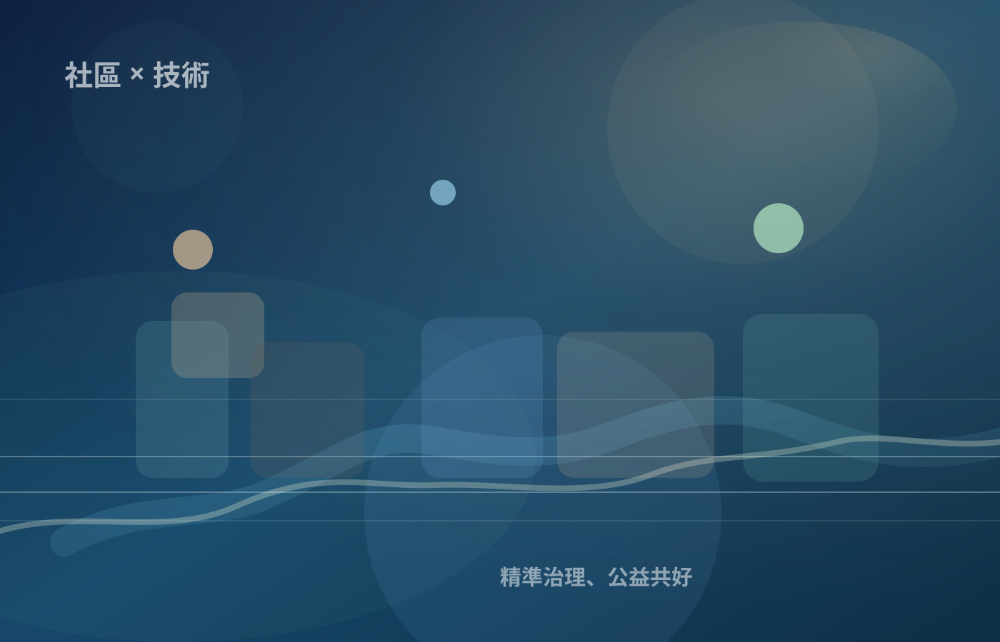

商業支持，公益共榮
上品聊國咖啡與在地商家可作為測試與造血節點，但不得宣稱非營利資源直接支持私人營利。
Association Vision
以科技與咖啡館現場的力量，支持社區公益，讓在地生活更好。協會分場可理解創辦人公益與技術捐贈意圖，但不得因此自動核准補助、會員身份、職務升降或正式公告。

Total Field Extract
每一項都必須回到人審、證據與總場 verifier。
上品聊國咖啡與在地商家可作為測試與造血節點，但不得宣稱非營利資源直接支持私人營利。
協會服務定位包含社區照護、公益基金、許願樹、志工服務、社區教育與社區數位治理。
居民、長輩、志工與商家不是被動資料，而是能參與、確認、拒絕與追蹤的主體。
涉及創辦人三重身分時，需保留會務紀錄、授權契約、利益衝突揭露或總場 seal。
Role Boundary
我們不是把 AI 放到人之上，而是用 AI 幫人把需求說清楚。
小J可以投影為社區服務員、商家服務員、個人管家或大樓數位秘書，但統一仍是 candidate_only。
活動、志工、會員流程、補助說明可先做候選整理；正式會務、補助與會員身份仍需人審與總場驗證。